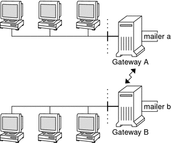

|
|||||||||||||||
|
Part I Network Services Topics Part II Accessing Network File Systems Topics 4. Managing Network File Systems (Overview) 5. Network File System Administration (Tasks) 6. Accessing Network File Systems (Reference) 8. Planning and Enabling SLP (Tasks) 10. Incorporating Legacy Services Mail Service Programs and Files Mail Addresses and Mail Routing Interactions of sendmail With Name Services Changes in Version 8.13 of sendmail Changes From Version 8.12 of sendmail Part V Serial Networking Topics 15. Solaris PPP 4.0 (Overview) 16. Planning for the PPP Link (Tasks) 17. Setting Up a Dial-up PPP Link (Tasks) 18. Setting Up a Leased-Line PPP Link (Tasks) 19. Setting Up PPP Authentication (Tasks) 20. Setting Up a PPPoE Tunnel (Tasks) 21. Fixing Common PPP Problems (Tasks) 22. Solaris PPP 4.0 (Reference) 23. Migrating From Asynchronous Solaris PPP to Solaris PPP 4.0 (Tasks) 25. Administering UUCP (Tasks) Part VI Working With Remote Systems Topics 27. Working With Remote Systems (Overview) 28. Administering the FTP Server (Tasks) 29. Accessing Remote Systems (Tasks) Part VII Monitoring Network Services Topics |
Software and Hardware Components of Mail ServicesThis section describes the software and hardware components of a mail system. Software ComponentsEach mail service includes at least one of each of the following software components. This section also describes these software components. Mail User AgentThe mail user agent is the program that acts as the interface between the user and mail transfer agent. The sendmail program is a mail transfer agent. The Solaris operating system supplies the following mail user agents.
Mail Transfer AgentThe mail transfer agent is responsible for the routing of mail messages and the resolution of mail addresses. This agent is also known as a mail transport agent. The transfer agent for the Solaris operating system is sendmail. The transfer agent performs these functions.
Local Delivery AgentA local delivery agent is a program that implements a mail delivery protocol. The following local delivery agents are provided with the Solaris operating system.
Changes From Version 8.12 of sendmail provides information on these related topics.
Mailers and sendmailMailer is a sendmail-specific term. A mailer is used by sendmail to identify a specific instance of a customized local delivery agent or a customized mail transfer agent. You need to specify at least one mailer in your sendmail.cf file. For task information, refer to Building the sendmail.cf Configuration File in Chapter 13, Mail Services (Tasks). This section provides a brief description of two types of mailers. For additional information about mailers, see http://www.sendmail.org/m4/readme.html or /etc/mail/cf/README. Simple Mail Transfer Protocol (SMTP) MailersSMTP is the standard mail protocol that is used on the Internet. This protocol defines these mailers.
UNIX-to-UNIX Copy Program (UUCP) MailersIf possible, avoid using UUCP. For an explanation, refer to http://www.sendmail.org/m4/uucp_mailers.html or do a search in /etc/mail/cf/README on this string: USING UUCP MAILERS. UUCP defines these mailers.
If MAILER(smtp) is also specified in your configuration, two more mailers are defined.
Note - Because the smtp mailer modifies the UUCP mailer, always put MAILER(smtp) before MAILER(uucp) in your .mc file. Mail AddressesThe mail address contains the name of the recipient and the system to which the mail message is delivered. When you administer a small mail system that does not use a name service, addressing mail is easy. The login names uniquely identify the users. Complexity is introduced if you are administering a mail system that has more than one system with mailboxes or that has one or more domains. Additional complexity can be generated if you have a UUCP (or other) mail connection to servers outside your network. The information in the following sections can help you understand the parts and complexities of a mail address. Domains and SubdomainsEmail addressing uses domains. A domain is a directory structure for network address naming. A domain can have one or more subdomains. The domain and subdomains of an address can be compared to the hierarchy of a file system. Just as a subdirectory is considered to be inside the directory above it, each subdomain in a mail address is considered to be inside the location to its right. The following table shows some top-level domains. Table 14-7 Top-Level Domains
Domains are case insensitive. You can use uppercase, lowercase, or mixed-case letters in the domain part of an address without making any errors. Name Service Domain Name and Mail Domain NameWhen you are working with name service domain names and mail domain names, remember the following.
For more information, refer to Interactions of sendmail With Name Services. Typical Format for Mail AddressesTypically, a mail address has the following format. For further details, refer to Route-Independent Mail Addresses. user@subdomain. ... .subdomain2.subdomain1.top-level-domain The part of the address to the left of the @ sign is the local address. The local address can contain the following.
Note - The receiving mailer is responsible for determining what the local part of the address means. For information about mailers, refer to Mailers and sendmail. The part of the address to the right of the @ sign shows the domain levels, which is where the local address resides. A dot separates each subdomain. The domain part of the address can be an organization, a physical area, or a geographic region. Furthermore, the order of domain information is hierarchical, so the more local the subdomain, the closer the subdomain is to the @ sign. Route–Independent Mail AddressesMail addresses can be route independent. Route-independent addressing requires the sender of an email message to specify the name of the recipient and the final destination. A high-speed network, such as the Internet, uses route-independent addresses. Route-independent addresses can have this format. user@host.domain Route-independent addresses for UUCP connections can have this address format. host.domain!user The increased popularity of the domain-hierarchical naming scheme for computers is making route-independent addresses more common. Actually, the most common route-independent address omits the host name and relies on the domain name service to properly identify the final destination of the email message. user@domain Route-independent addresses are first read by searching for the @ sign. The domain hierarchy is then read from the right (the highest level) to the left (the most specific part of the address to the right of the @ sign). Mailbox FilesA mailbox is a file that is the final destination for email messages. The name of the mailbox can be the user name or the identity of a specific function, such as the postmaster. Mailboxes are in the /var/mail/username file, which can exist either on the user's local system or on a remote mail server. In either instance, the mailbox is on the system to which the mail is delivered. Mail should always be delivered to a local file system so that the user agent can pull mail from the mail spool and store it readily in the local mailbox. Do not use NFS-mounted file systems as the destination for a user's mailbox. Specifically, do not direct mail to a mail client that is mounting the /var/mail file system from a remote server. Mail for the user, in this instance, should be addressed to the mail server and not to the client host name. NFS-mounted file systems can cause problems with mail delivery and handling. The /etc/mail/aliases file and name services such as NIS and NIS+ provide mechanisms for creating aliases for electronic mail addresses. So, users do not need to know the precise local name of a user's mailbox. The following table shows some common naming conventions for special-purpose mailboxes. Table 14-8 Conventions for the Format of Mailbox NamesStarting with sendmail version 8, the envelope sender for mail that is sent to a group alias has been changed to the address that is expanded from the owner alias, if an owner alias exists. This change enables any mail errors to be sent to the alias owner, rather than being returned to the sender. With this change, users notice that mail that was sent to an alias looks as if the mail came from the alias owner, when delivered. The following alias format helps with some of the problems that are associated with this change. mygroup: :include:/pathname/mygroup.list owner-mygroup: mygroup-request mygroup-request: sandys, ignatz In this example, the mygroup alias is the actual mail alias for the group. The owner-mygroup alias receives error messages. The mygroup-request alias should be used for administrative requests. This structure means that in mail sent to the mygroup alias, the envelope sender changes to mygroup-request. Mail AliasesAn alias is an alternate name. For email, you can use aliases to assign a mailbox location or to define mailing lists. For a task map, refer to Administering Mail Alias Files (Task Map) in Chapter 13, Mail Services (Tasks). Also, you can refer to Mail Alias Files in this chapter. For large sites, the mail alias typically defines the location of a mailbox. Providing a mail alias is like providing a room number as part of the address for an individual at a large corporation that occupies multiple rooms. If you do not provide the room number, the mail is delivered to a central address. Without a room number, extra effort is required to determine where within the building the mail is to be delivered. So, the possibility of an error increases. For example, if two people who are named Kevin Smith are in the same building, only one of them might get mail. To correct the problem, each Kevin Smith should have a room number added to his address. Use domains and location-independent addresses as much as possible when you create mailing lists. To enhance portability and flexibility of alias files, make your alias entries in mailing lists as generic and system independent as possible. For example, if you have a user who is named ignatz on system mars, in domain example.com, create the alias ignatz@example instead of ignatz@mars. If user ignatz changes the name of his system but remains within the example domain, you do not need to update alias files to reflect the change in system name. When you create alias entries, type one alias per line. You should have only one entry that contains the user's system name. For example, you could create the following entries for user ignatz. ignatz: iggy.ignatz iggyi: iggy.ignatz iggy.ignatz: ignatz@mars You can create an alias for local names or domains. For example, an alias entry for user fred, who has a mailbox on the system mars and is in the domain planets, could have this entry in the NIS+ aliases table. fred: fred@planets When you create mail lists that include users outside your domain, create the alias with the user name and the domain name. For example, if you have a user who is named smallberries on system privet, in domain example.com, create the alias as smallberries@example.com. The email address of the sender is now automatically translated to a fully qualified domain name when mail goes outside the user's domain. The following list describes methods for creating and administering mail alias files.
Hardware ComponentsYou can provide the three required elements of mail configuration in the same system or have separate systems provide these elements. When users are to communicate with networks outside your domain, you must also add a fourth element, a mail gateway. For more information, refer to Mail Gateway. The following sections describe each hardware component. Mail HostA mail host is the machine that you designate as the main mail machine on your network. A mail host is the machine to which other systems at the site forward mail that cannot be delivered. You designate a system as a mail host in the hosts database by adding the word mailhost to the right of the IP address in the local /etc/hosts file. Alternately, you can add the word mailhost similarly to the hosts file in the name service. For detailed task information, refer to How to Set Up a Mail Host in Chapter 13, Mail Services (Tasks). A good candidate for a mail host is a system that is configured as a router from your network to the Internet global network. For more information, refer to Chapter 15, Solaris PPP 4.0 (Overview), Chapter 24, UUCP (Overview), and Configuring an IPv4 Router in System Administration Guide: IP Services. If no systems on your local network have a modem, designate a system as the mail host. Some sites use standalone machines that are not networked in a time-sharing configuration. Specifically, the standalone machine serves terminals that are attached to its serial ports. You can set up electronic mail for this configuration by designating the standalone system as the mail host of a single-system network. Overview of the Hardware Components in Chapter 12, Mail Services (Overview) provides a figure that shows a typical email configuration. Mail ServerA mailbox is a single file that contains email for a particular user. Mail is delivered to the system where the user's mailbox resides, which can be on a local machine or a remote server. A mail server is any system that maintains user mailboxes in its /var/mail directory. For task information, refer to How to Set Up a Mail Server in Chapter 13, Mail Services (Tasks). The mail server routes all mail from a client. When a client sends mail, the mail server puts the mail in a queue for delivery. After the mail is in the queue, a user can reboot or turn off the client without losing those mail messages. When the recipient gets mail from a client, the path in the From line of the message contains the name of the mail server. If the recipient responds, the response goes to the user's mailbox. Good candidates for mail servers are systems that provide a home directory for users or systems that are backed up regularly. If the mail server is not the user's local system, users in configurations that use NFS software can mount the /var/mail directory by using the /etc/vfstab file, if they have root access. Otherwise, users can use the automounter. If NFS support is not available, users can log in to the server to read their mail. If users on your network send other types of mail, such as audio files or files from desktop publishing systems, you need to allocate more space on the mail server for mailboxes. By establishing a mail server for all mailboxes, you can simplify your process of doing backups. Backups can be difficult to do when mail is spread over many systems. The disadvantage of storing many mailboxes on one server is that the server can be a single point of failure for many users. However, the advantages of providing good backups usually make the risk worthwhile. Mail ClientA mail client is a user of mail services with a mailbox on a mail server. Additionally, the mail client has a mail alias in the /etc/mail/aliases file that points to the location of the mailbox. For task information, refer to How to Set Up a Mail Client in Chapter 13, Mail Services (Tasks). Mail GatewayThe mail gateway is a machine that handles connections between networks that run different communications protocols or communications between different networks that use the same protocol. For example, a mail gateway might connect a TCP/IP network to a network that runs the Systems Network Architecture (SNA) protocol suite. The simplest mail gateway to set up is the mail gateway that connects two networks that use the same protocol or mailer. This system handles mail with an address for which sendmail cannot find a recipient in your domain. If a mail gateway exists, sendmail uses the gateway to send and receive mail outside your domain. You can set up a mail gateway between two networks that use unmatched mailers, as shown in the next figure. To support this configuration, you must customize the sendmail.cf file on the mail gateway system, which can be a difficult and time-consuming process. Figure 14-1 Gateway Between Different Communications ProtocolsIf you have a machine that provides connections to the Internet, you can configure that machine as the mail gateway. Carefully consider your site's security needs before you configure a mail gateway. You might need to create a firewall gateway between your corporate network and other networks, and set up that gateway as the mail gateway. For task information, refer to How to Set Up a Mail Gateway in Chapter 13, Mail Services (Tasks). |
||||||||||||||
|